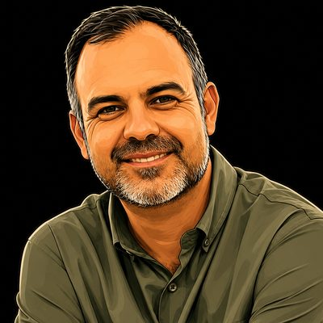
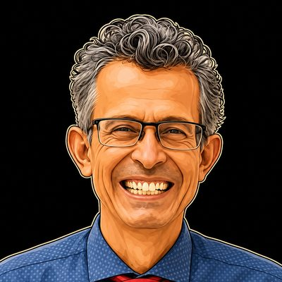
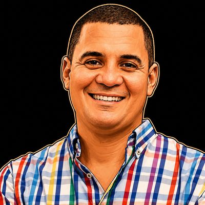
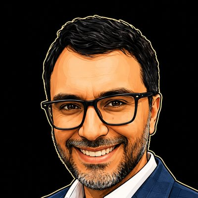
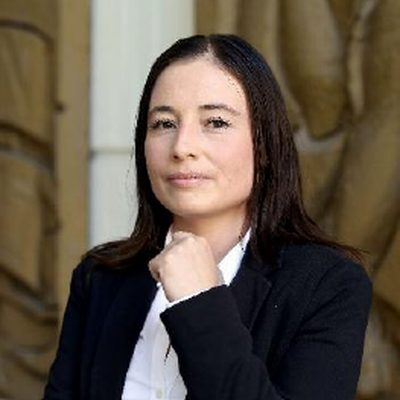
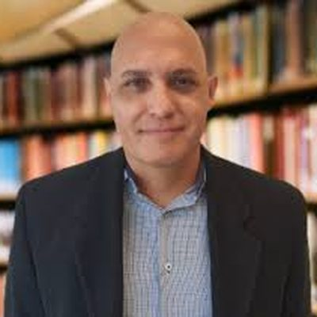
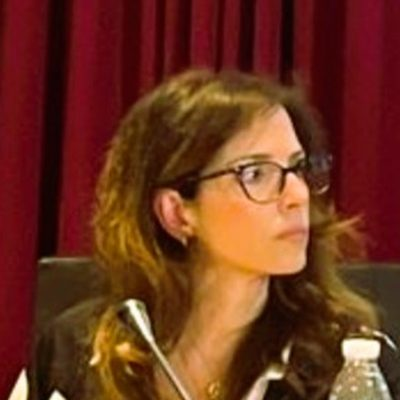

9:00– 10:00
Inauguración
Ceremonia inaugural con autoridades universitarias.
Estás en la memoria de la IV edición (2026)Ir a la V edición
El programa de la IV edición, tal como se celebró: dos días presenciales, el lunes 21 y el martes 22 de septiembre, repartidos entre CUCEA, CUGDL, la Cineteca FICG y Ciudad Judicial, y una jornada virtual internacional el viernes 18. Cada nombre abre la semblanza de su ponente.
CUCEA por la mañana · CUGDL por la tarde
Centro Universitario de Ciencias Económico Administrativas · Zapopan
En esta sede · IA agéntica · Justicia digital · Derechos humanos · CFP
Lugar Auditorio Lic. Raúl Padilla López · Periférico Norte 799, Núcleo Universitario Los Belenes, C.P. 45100, Zapopan, Jalisco Cómo llegar ↗
Ceremonia inaugural con autoridades universitarias.
 ALGDETIC · CiberPadres LATAM (Paraguay)«Infancias conectadas, infancias protegidas: ciberseguridad y salud digital de la niñez»
ALGDETIC · CiberPadres LATAM (Paraguay)«Infancias conectadas, infancias protegidas: ciberseguridad y salud digital de la niñez» CSJN Argentina · U. Nacional de Cuyo«El concepto de autoría en los tiempos de la Propiedad Intelectual Generativa»
CSJN Argentina · U. Nacional de Cuyo«El concepto de autoría en los tiempos de la Propiedad Intelectual Generativa» CU Tlajomulco, UdeG«Ciencia sin autor»
CU Tlajomulco, UdeG«Ciencia sin autor» Coordinador de Transferencia Tecnológica y del Conocimiento · Universidad de Guadalajara«Propiedad intelectual y transferencia de tecnología en la era de la inteligencia artificial»
Coordinador de Transferencia Tecnológica y del Conocimiento · Universidad de Guadalajara«Propiedad intelectual y transferencia de tecnología en la era de la inteligencia artificial» Modera
Modera  Secretario Técnico · Secretaría Ejecutiva del Sistema Estatal Anticorrupción de Jalisco
Secretario Técnico · Secretaría Ejecutiva del Sistema Estatal Anticorrupción de Jalisco Tecnológico de Monterrey«La libertad frente a la IA: el caso del algoritmo Andrómeda»
Tecnológico de Monterrey«La libertad frente a la IA: el caso del algoritmo Andrómeda» Magistrado Auxiliar, CSJ · Presidente de ALGDETIC«Evaluar para aprender y aprender a evaluar»
Magistrado Auxiliar, CSJ · Presidente de ALGDETIC«Evaluar para aprender y aprender a evaluar»Ninguna sesión coincide con el filtro.
Centro Universitario de Guadalajara
En esta sede · Derechos · Seguridad · Economía digital · Derecho ecológico
Lugar Auditorio Salvador Allende · Calle Guanajuato 1045, Alcalde Barranquitas, C.P. 44270, Guadalajara, Jalisco Cómo llegar ↗
Modera · CSJN Argentina · U. Nacional de Cuyo Modera · El Colegio de Jalisco
Modera · El Colegio de Jalisco Escudo Urbano C5 · Gobierno de Jalisco
Escudo Urbano C5 · Gobierno de Jalisco Sistema Estatal C5i · Guanajuato
Sistema Estatal C5i · Guanajuato KMS TechnologyModera
KMS TechnologyModera  AMCID · FIADI«Ciberseguridad y Cómputo Cuántico: el Q-Day y cómo prepararse»
AMCID · FIADI«Ciberseguridad y Cómputo Cuántico: el Q-Day y cómo prepararse» APPIF · Fintegrity Group (Panamá)«Trazabilidad y auditoría forense de los criptoactivos»
APPIF · Fintegrity Group (Panamá)«Trazabilidad y auditoría forense de los criptoactivos»
CUTlajomulco · Presidente del IEEE Sección Guadalajara
Centro de Investigación en Computación · IPNNinguna sesión coincide con el filtro.
Cineteca FICG por la mañana · Ciudad Judicial por la tarde
Centro Cultural Universitario · Zapopan
En esta sede · Ciencias forenses · Mediación y ODR · Salud digital · Guerra algorítmica
Lugar Sala Guillermo del Toro · Centro Cultural Universitario · Av. Periférico Norte Manuel Gómez Morín 1695, Belenes Norte, C.P. 45158, Zapopan, Jalisco Cómo llegar ↗
 Director General del Instituto Jalisciense de Ciencias Forenses«Tecnología, ciencias forenses y derechos: identificación craneométrica con IA»
Director General del Instituto Jalisciense de Ciencias Forenses«Tecnología, ciencias forenses y derechos: identificación craneométrica con IA»
Cartagena, Colombia«MED-IA-CCIÓN: una nueva línea de acción para la mediación escolar y la gestión pacífica de conflictos en entornos educativos» Instituto de Justicia Alternativa · El Colegio de Jalisco«Innovación jurídica y resolución de conflictos»
Instituto de Justicia Alternativa · El Colegio de Jalisco«Innovación jurídica y resolución de conflictos»
UANL«Veracidad representativa y violencia simbólica en la ciudad digital»Modera · AMCID · FIADI Poder Judicial de la Federación«Marco jurídico de la telemedicina»
Poder Judicial de la Federación«Marco jurídico de la telemedicina» Hospital Civil de Guadalajara «Fray Antonio Alcalde»«El expediente clínico electrónico y el derecho sanitario en México»
Hospital Civil de Guadalajara «Fray Antonio Alcalde»«El expediente clínico electrónico y el derecho sanitario en México» CUCSH, UdeG«Transformación tecnológica de la salud, Health Care 5.0: vulnerabilidad y riesgos de violencia estructural para los derechos humanos en México»
CUCSH, UdeG«Transformación tecnológica de la salud, Health Care 5.0: vulnerabilidad y riesgos de violencia estructural para los derechos humanos en México» Jefa del Departamento de Innovación · Hospital Civil de Guadalajara«Sistema Institucional de Innovación en Salud del Hospital Civil de Guadalajara»
Jefa del Departamento de Innovación · Hospital Civil de Guadalajara«Sistema Institucional de Innovación en Salud del Hospital Civil de Guadalajara»IA, sistemas autónomos, derecho y responsabilidad jurídica en los conflictos armados

Doctorante en la Universidad de Salamanca, España · Especialista en seguridad nacional y crimen organizado transnacional
Universidad de Guadalajara · Centro de Estudios para América del Norte · Departamento de Estudios del Pacífico · SNI Nivel INinguna sesión coincide con el filtro.
Auditorio de Ciudad Judicial del Estado de Jalisco
En esta sede · Justicia digital · Magistratura · Clausura
Lugar Auditorio de Ciudad Judicial · Poder Judicial del Estado de Jalisco · Anillo Periférico Poniente Manuel Gómez Morín 7255, C.P. 45010, Zapopan, Jalisco (no confundir con la Ciudad Judicial Federal, n.º 7727) Cómo llegar ↗
ALGDETIC · CiberPadres LATAM (Paraguay)«Ciberseguridad e inteligencia artificial en el sector judicial»Modera  Consejo Superior de la Judicatura · Rama Judicial de Colombia«La IA no transforma instituciones: las personas sí. Innovación pública y nuevas capacidades para la justicia del futuro»
Consejo Superior de la Judicatura · Rama Judicial de Colombia«La IA no transforma instituciones: las personas sí. Innovación pública y nuevas capacidades para la justicia del futuro» Juez de Control · Poder Judicial del Estado de Jalisco«El juez penal en el siglo XXI»
Juez de Control · Poder Judicial del Estado de Jalisco«El juez penal en el siglo XXI» U. Tecnológica de Bolívar · Conjuez, Sala Laboral (Cartagena)«Trabajo digital, prueba analógica: los retos probatorios de las relaciones laborales mediadas por tecnología»Magistrado Auxiliar, CSJ · Presidente de ALGDETIC«Tribunales del siglo XXI: tecnologías emergentes y nuevos paradigmas en la administración de justicia»
U. Tecnológica de Bolívar · Conjuez, Sala Laboral (Cartagena)«Trabajo digital, prueba analógica: los retos probatorios de las relaciones laborales mediadas por tecnología»Magistrado Auxiliar, CSJ · Presidente de ALGDETIC«Tribunales del siglo XXI: tecnologías emergentes y nuevos paradigmas en la administración de justicia» Decano de Derecho · Universidad Libre, Cartagena«El juez en la era de los algoritmos: riesgos de la asistencia tecnológica, perspectiva desde el derecho procesal y probatorio en Colombia»
Decano de Derecho · Universidad Libre, Cartagena«El juez en la era de los algoritmos: riesgos de la asistencia tecnológica, perspectiva desde el derecho procesal y probatorio en Colombia» Magistrado Presidente del Supremo Tribunal de Justicia del Estado de Jalisco y del Consejo de la Judicatura«La transformación digital de la justicia en Jalisco: tribunales más ágiles, cercanos y humanos»
Magistrado Presidente del Supremo Tribunal de Justicia del Estado de Jalisco y del Consejo de la Judicatura«La transformación digital de la justicia en Jalisco: tribunales más ágiles, cercanos y humanos»Ceremonia de clausura, presidida por el Magistrado Presidente del Supremo Tribunal de Justicia del Estado de Jalisco.
Ninguna sesión coincide con el filtro.
Día previo · transmisión en línea · 12 minutos por exposición
Dos continentes, una sesión · enlace de conexión para personas registradas
En esta sede · IA agéntica · Prueba y gobernanza · Persona y autonomía · Identidad digital · Justicia y datos
12 minutos por exposición · Ver el video de esta sede ↗
Bienvenida y apertura de la Jornada Virtual Internacional.
Modera · CSJN Argentina · U. Nacional de Cuyo Presidenta del Observatorio Mundial de la Abogacía (OMA)«La caja negra de la inteligencia artificial agéntica y los desafíos jurídicos de la trazabilidad y el control de sistemas autónomos»
Presidenta del Observatorio Mundial de la Abogacía (OMA)«La caja negra de la inteligencia artificial agéntica y los desafíos jurídicos de la trazabilidad y el control de sistemas autónomos» Universidad Alfonso X el Sabio · IusConnect (España)«La prueba digital en la era de la Inteligencia Artificial agéntica: autenticidad, vulnerabilidad y preservación temprana de la evidencia»
Universidad Alfonso X el Sabio · IusConnect (España)«La prueba digital en la era de la Inteligencia Artificial agéntica: autenticidad, vulnerabilidad y preservación temprana de la evidencia» Modera · Colaborador del Cuerpo Académico UDG-CA-1236 «Derecho y Tecnología»
Modera · Colaborador del Cuerpo Académico UDG-CA-1236 «Derecho y Tecnología» Universidad Continental (Perú)«Inteligencia artificial en la decisión médica y responsabilidad penal: criterios para la reconstrucción de la imputación individual mediante trazabilidad, información y supervisión humana»
Universidad Continental (Perú)«Inteligencia artificial en la decisión médica y responsabilidad penal: criterios para la reconstrucción de la imputación individual mediante trazabilidad, información y supervisión humana»
Universidad de Sevilla (España)«Derecho de la Persona y el Derecho de Daños frente a la Justicia Predictiva: la reducción del sujeto a patrones algorítmicos de comportamiento y los mecanismos de protección civil»Modera · Presidenta del Observatorio Mundial de la Abogacía (OMA) Ayllón & Asociados Abogados · ICAM (España)«Derechos de personas fallecidas reactivadas por la IA: los ghostbots»Modera · Universidad Alfonso X el Sabio · IusConnect (España)
Ayllón & Asociados Abogados · ICAM (España)«Derechos de personas fallecidas reactivadas por la IA: los ghostbots»Modera · Universidad Alfonso X el Sabio · IusConnect (España) UNAM«Los derechos epistémicos como cuarta generación de derechos humanos»
UNAM«Los derechos epistémicos como cuarta generación de derechos humanos»Cierre de la Jornada Virtual Internacional e invitación a las jornadas presenciales del 21 y 22 de septiembre.
Ninguna sesión coincide con el filtro.
Memoria en video de las sesiones transmitidas · #ForoDyT